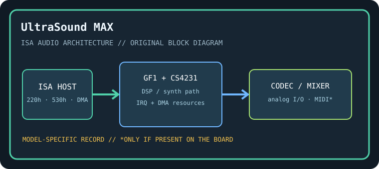

[ INDIVIDUAL COMPONENT // SOUND HARDWARE ]
Gravis UltraSound MAX (GUS MAX)
GUS MAX combines Gravis wavetable hardware with an added codec/audio section. It is not the GUS Classic or GUS ACE; preserve the model and PCB revision because resource and codec details differ.

Model-specific specifications
| Catalog identity / chipset / DSP | Gravis UltraSound MAX (GUS MAX). Gravis GF1 wavetable/sample engine with MAX-specific audio logic; Crystal CS4231-family codec is present on MAX boards (verify exact marking). |
|---|---|
| Audio codec / conversion | CS4231-compatible 16-bit codec section supports PCM and Windows Sound System-style operation; the GF1 sample engine remains a separate audio path. |
| Bus / I/O / ports | 16-bit ISA. Common GUS base 220h and codec/WSS base 530h; MIDI and mixer-related decode vary with setup. Check the Gravis configuration utility and board straps rather than using Classic defaults. |
| IRQ | Configurable GF1 and codec IRQ resources; common choices include 5, 7, 11, or 12, but actual independent assignments depend on setup and host. |
| DMA | GF1 sample playback uses an 8-bit DMA channel (commonly 1 or 3); CS4231 PCM may use 8/16-bit DMA channels. Reserve and record each path separately. |
| Driver / operating system | Gravis UltraSound setup/ULTRASND environment tools and period DOS/Windows drivers; WSS-compatible software can use the codec path. Modern OS driver availability is limited and model-dependent. |
| Motherboard compatibility | Requires ISA host and enough available IRQ/DMA resources for wavetable and codec paths. Some 16-bit AT motherboards reserve upper DMA channels; test both digital engines independently. |
| Sound standards / interfaces | Gravis GF1 wavetable, Windows Sound System-compatible codec mode, MIDI/General MIDI patch playback, and SB-compatible DOS emulation through software; emulation is not native SB hardware. |
| Connectors / power | ISA slot power; use only the analog, MIDI, CD-audio, and auxiliary connectors physically present on this exact board. Inspect the edge bracket, keyed headers, PCB revision, and manual before connecting. |
Compatibility & preservation notes
GUS MAX combines Gravis wavetable hardware with an added codec/audio section. It is not the GUS Classic or GUS ACE; preserve the model and PCB revision because resource and codec details differ. The precise DSP/codec package, firmware, resource assignment, and OS driver release must be matched to the physical SKU. Record the actual base port, IRQ, DMA channels, driver version, motherboard chipset, and BIOS configuration used in a working test rather than copying family defaults.
- Photograph the complete model number, PCB revision, major IC markings, jumpers, connectors, and any daughterboard before service.
- Check DMA and IRQ reservations against storage, serial/parallel, and other ISA devices; test PCM, synthesis, and MIDI functions independently.
- Power down and unplug the host before fitting/removing ISA hardware. Keep the exact manual and original setup/driver media with the specimen.
Manufacturer manuals & archival sources
- Internet Archive — Gravis UltraSound MAX manualArchive catalog search for original manufacturer-authored manual/setup documentation for this model; confirm the full SKU and revision in any scan.
- Internet Archive — Gravis UltraSound MAX setup and driver disksArchive catalog search for preserved manufacturer driver, utility, or bundled software media for this specific board.
- Internet Archive — Gravis UltraSound MAX documentation archiveAdditional model-specific catalog records and manuals; use the physical board marking to exclude adjacent revisions and related products.
Archive search links are discovery records rather than claims that one particular scan is an original; verify provenance, revision and completeness before relying on a scanned setup guide.